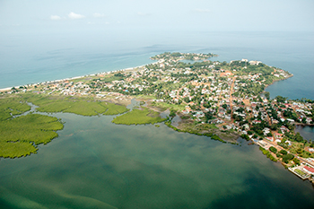
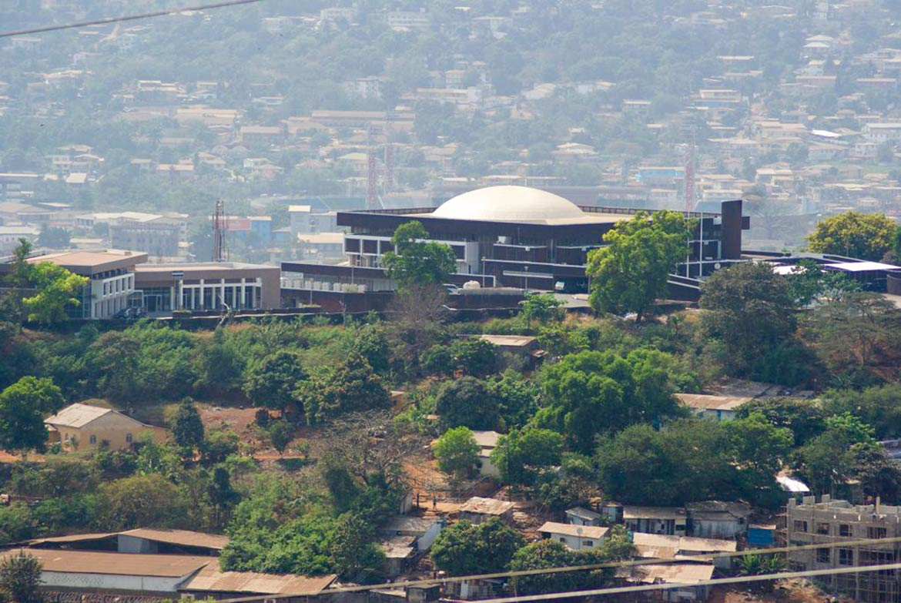
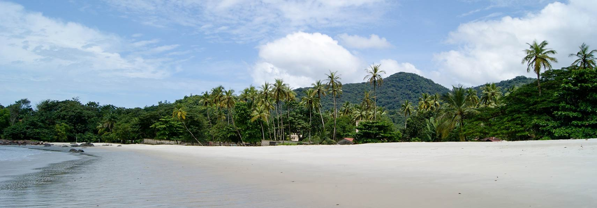
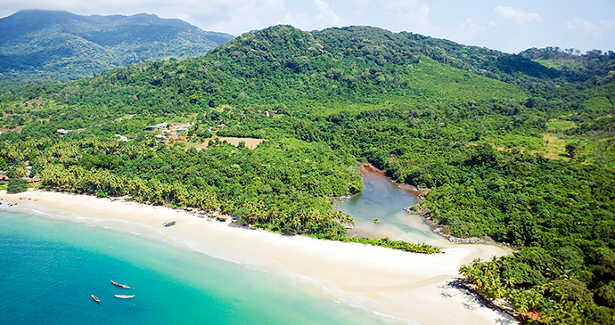

The Sierra Leone Parliament, like its counterparts in other former British colonies, began as a Legislative Council. It was inaugurated in 1863, but was renamed the House of Representatives in 1954. The first decade of Independence (1961 – 1971), often referred to as the golden age, was a momentous period in the country’s Parliamentary evolution. When the British crown took management of the colony in 1808, no African was represented in the colony’s administration; the governor, with a few white officials ruled the colony by a body known as the Governor’s Advisory Council.
Move to Freetown
Amazing Place in Sierra Leone


The city of Freetown is the land of the free
2 minutes
Explore the best hotel in town
2 minutes
Rice farming is the main source of food in Salone
2 minutes

Oyolah
2
August, 2020
5 Commets
Take a nice view from Tawer Hill at the Sierra Leone
Parliament.

Oyolah
2
August, 2020
7 Commets
River-No2 Village Beach is the place you will like to check
during your visit in sierra leone
River Number 2 is the name of the river that flows into the ocean on the Western Area Peninsula and refers to both this river and the beach. It is seen as one of Sierra Leone’s most alluring and celebrated attractions and is popular with both tourists and Sierra Leoneans. It is next to Tokeh Beach. The beauty of River number 2 does not only lie in its gorgeous beach side, towering mountains and mangrove forest that flank the river flowing into the sea, it also lies in the fact that it hosts a completely community-run tourist location. Their organization, the Community Tourism Development Association, was founded about 20 years ago and has been active in protecting the beachfront, developing the tourist industry and supporting their community.

Oyolah
2
August, 2020
5 Commets
View the capital city of Sierra Leone from a distance and
enjoy the great view of Freetown.
The area was first settled in 1787 by 400 formerly enslaved black people sent from London, England, under the auspices of the Committee for the Relief of the Black Poor, an organisation set up by Jonah Hanway and the British abolitionist Granville Sharp. These black people were African Americans, Afro-Caribbeans, Africans, Southeast Asians, and black people born in Great Britain. They established the 'Province of Freedom' and the settlement of Granville Town on land purchased from local Koya Temne subchief King Tom and regent Naimbana. The British understood the purchase meant that their new settlers had the land "for ever." Although the established arrangement between Europeans and the Koya Temne included provisions for permanent settlement, some historians question how well the Koya leaders understood the agreement, as they had a different conception of the uses of property.

Oyolah
2
August, 2020
12 Commets
Take a ride to the great historic Banana Island, beauty
awaits you
The Banana Islands are a group of islands that lie off the coast of Yawri Bay, south west of the Freetown Peninsula in the Western Area of Sierra Leone. Three islands make up the Banana Islands: Dublin and Ricketts are linked by a stone causeway. The third Mes-Meheux is uninhabited. Dublin Island is known for its beaches, while Ricketts Island is best known for its forests. Banana Islands are entirely surrounded by the Freetown peninsula; and the islands are only accessible by boat, ferry and helicopter. The major industries in Banana Islands are fishing and tourism.